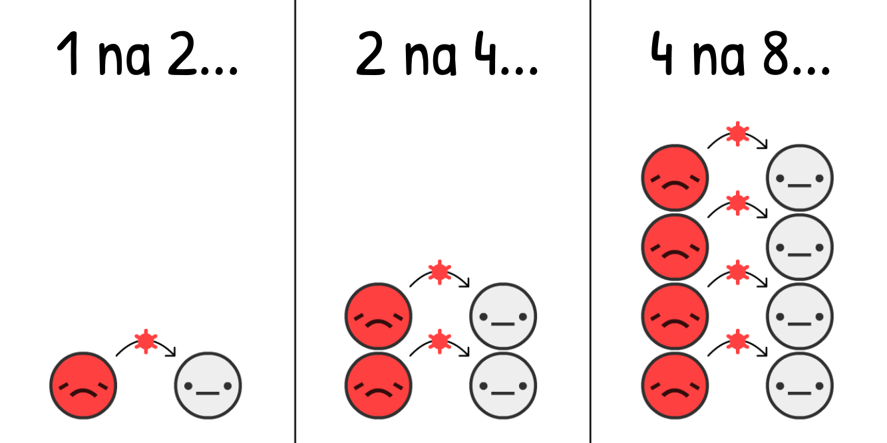
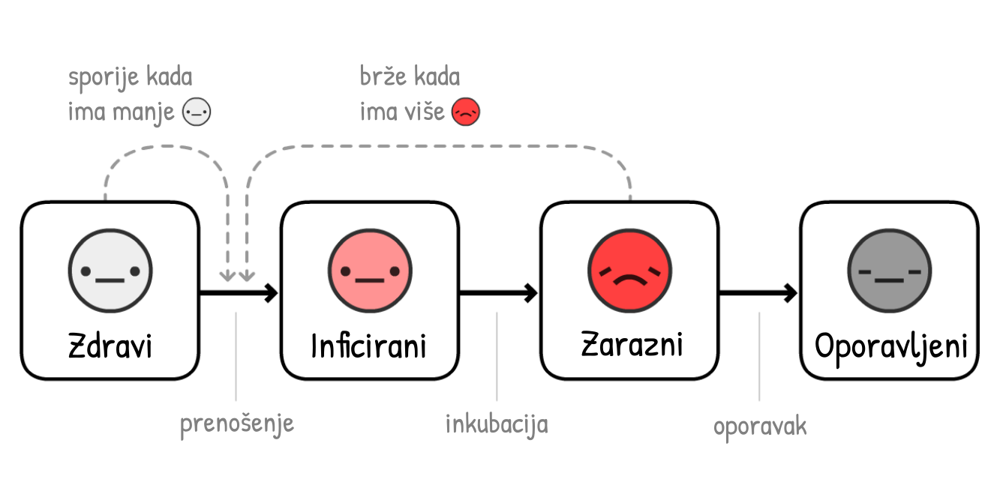
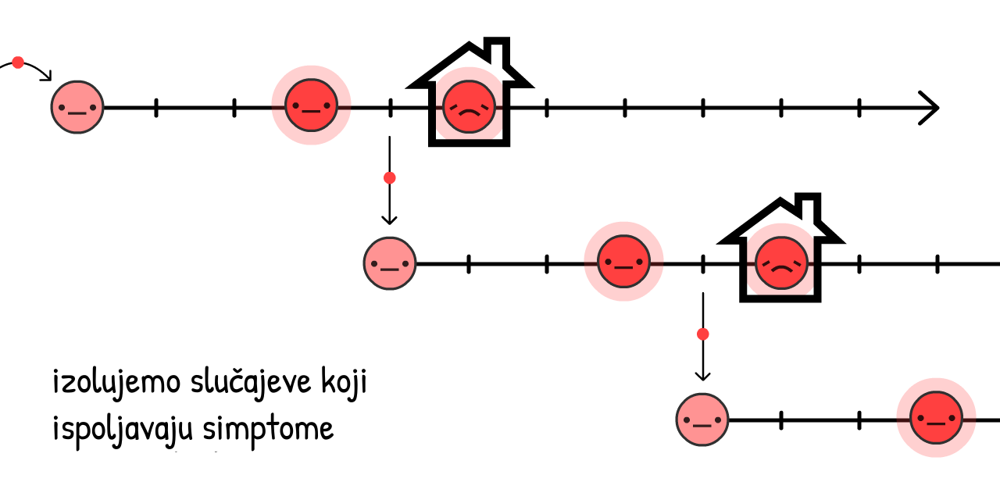
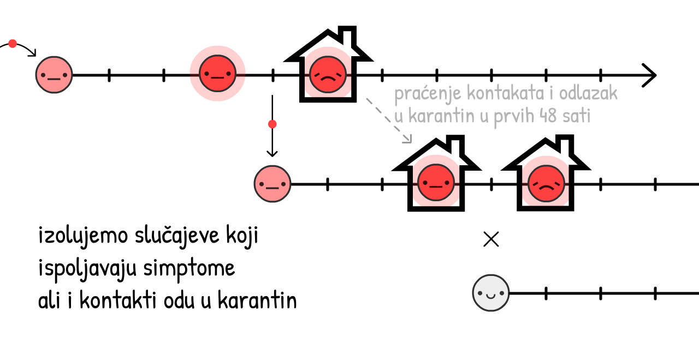

"Jedina stvar za strah je sam strah" bio je glup savet.
Naravno, ne morate nagomilavati rolne toalet papira – ali ako se oni zaduženi za donošenje odluka plaše straha, oni će podceniti realnost situacije sa ciljem da izbegnu "masovnu paniku". Strah nije problem, već kako kanališemo naš strah. Strah nam daje energiju da se nosimo sa opasnostima sada i priprema nas za opasnosti kasnije.
Iskreno, mi (Marcel, epidemiološka slika + Nicky, umetnost/kod) smo zabrinuti. Kladimo se, i vi ste! Zato smo mi kanalisali naš strah u pripremanje ovih simulacija za igranje, tako da vi možete kanalisati strah u razumevanje:
- Poslednjih nekoliko meseci (uvodni kurs epidemiologije, SEIR model, R & R0)
- Narednih nekoliko meseci (ograničenja kretanja, praćenje kontakata, maske)
- Narednih nekoliko godina (gubitak imuniteta? nedostatak vakcine?)
Ovaj vodič (objavljen prvog maja 2020. vidi ovu fusnotu!→1) za cilj ima da u vama pobudi nadu i strah. Da bismo pobedili COVID-19 na način koji čuva naše mentalno i finansijsko stanje, potreban nam je optimizam za smišljanje planova, i pesimizam za smišljanje rezervnih planova. Po rečima Gladis Brovnin Stern (Gladys Bronwyn Stern): “Optimista izmisli avion a pesimista padobran.”
Vežite se: na putu smo da osetimo turbulencije.

Piloti koriste simulatore letenja da nauče kako da ne ruše avione.
Epidemiolozi koriste simulatore epidemija da nauče kako da ne uruše čovečanstvo.
Počećemo od veoma, veoma jednostavnog "epidemiološkog simulatora letenja"! U ovoj simulaciji,

Procenjeno je da se na početku COVID-19 pandemije, virus prenosio sa
Ako simuliramo "dupliranje broja slučajeva na svaka 4 dana" i ništa više, na nivou populacije sa samo 0.001%
Pritiskom na "Pokreni" pokreće se simulacija! Možete je puštati ponovo kasnije sa drugačijim parametrima: (tehnički detalji: 3)
Ovo je kriva eksponencijalnog rasta. Počinje malim brojevima, ali brzo eksplodira. Od "oh pa to je samo grip" do "zapravo, grip ne uzrokuje masovne grobnice u bogatim gradovima".
Ali, ova simulacija je pogrešna. Eksponencijalni rast, na svu sreću, ne dešava se u nedogled. Jedna stvar koja zaustavlja širenje virusa su ljudi koji već imaju virus:

Što je više zaraznih
Kako ovo menja rast zaraženih tokom epidemije? Otkrijmo:
Ovo je "S-kriva" ili kriva logističkog rasta. Počinje malim brojevima, zatim eksplodira, a onda usporava.
Ali, ova simulacija je i dalje pogrešna. Nismo iskoristili činjenicu da zarazni
Zarad pojednostavljenja, hajde da pretpostavimo da svi
U slučaju COVID-19, procenjeno je da su
Ovo je suprotno od eksponencijalnog rasta, ovo je kriva eksponencijalnog opadanja.
Š ta se dešava ako simulirate S krivu logističkog rasta sa oporavljanjem?

Hajde da otkrijemo.
Crvena kriva predstavlja broj aktuelnih slučajeva
Siva kriva je ukupan broj slučajeva (aktuelni + oporavljeni
I otuda poznata kriva! Ovo nije zvono kriva (prim. prev. normalna raspodela, Gausova raspodela), nije čak ni "log-normalna" kriva. Ona nema ime. Ali videli ste je zilion puta, i preklinjani ste da je spljoštite.
Ovo je takozvani SIR model,5
(
druga najvažnija ideja u početnom kursu Epidemiologije:

Komentar: Simulacije na osnovu kojih se donose odluke su mnogo sofisticiranije od ovih! Ali SIR model i dalje može da objasni neke generalne trendove, iako mu nedostaju neke finese.
U stvari, hajde da dodamo još jednu finesu: pre nego što

(Ova varijanta modela zove se SEIR model6, gde "E" potiče od
U slučaju COVID-19, procenjeno je da se u stanju
Crvena + Roze kriva su trenutni slučajevi (zarazni
Siva kriva su ukupni slučajevi (trenutni + oporavljeni
Nije se mnogo toga promenilo! Vreme tokom koga osoba ostaje
Zašto je to tako? To je zbog prve najvažnije ideje u početnom kursu Epidemiologije:

Ovo je skraćeno od "Reproduktivni broj" (eng. Reproduction number). To je prosečan broj ljudi koje
R se menja tokom trajanja epidemije, kako se povećava broj imunih kao i intervencija.
R0 (u izgovoru R-nula ili na engleskom R-nought) je vrednost R na početku epidemije, pre imuniteta ili intervencija. R0 bliže prikazuje snagu samog virusa, ali se ipak menja u zavisnosti od lokacije. Na primer, R0 je veće u gušće naseljenim gradovima nego u retko naseljenim ruralnim sredinama.
(Većina članaka u novinama – čak i nekim istraživačkim radovima! – mešaju R i R0. Opet, naučna terminologija je loša)
R0 "tipičnog" sezonskog gripa je oko 1.288. Ovo znači da na početku epidemije gripa, svaki
Procenjena vrednost R0 za COVID-19 je oko 2.2,9 mada jedna još-uvek-nedovršena studija procenjuje da je vrednost bila 5.7(!) u Vuhanu.10
U našim simulacijama – na početku & u proseku –
Igrajte se sa računanjem R0 da vidite kako R0 zavisi od vremena potrebnog za oporavak i vremena proteklog do novo-zaraženih:
Ali zapamtite, što je manje
Kada je dovoljan broj ljudi imun, R < 1, i virus je zauzdan! Ovo je imunitet krda. Za viruse gripa, imunitet krda se dostiže vakcinisanjem. Pokušaj da se dostigne "prirodan imunitet krda" izlažući ljude zarazi je strašna ideja. (Ali ne zbog razloga koji vam možda padaju na pamet! Objasnićemo kasnije.)
A sada, poigrajmo se sa SEIR modelom ponovo, ali prikazujući vrednosti R0 i R kroz vreme, kao i granicu na kojoj je imunitet krda dostignut:
Obratite pažnju: Ukupan broj slučajeva ne staje sa rastom dostizanjem broja zaraženih potrebnih za imuniteta krda, već ga prevazilazi! I prevazilazi granicu tačno u momentu kada broj trenutnih slučajeva dostiže maksimum. (Ovo se dešava nezavisno od toga kako promenite parametre – probajte!)
Ovo se dešava zato što kada je više ne-
Ako ćete iz ovog čitanja usvojiti samo jednu pouku, nek bude ova – u pitanju je izuzetno kompleksan dijagram, te mu posvetite koliko god je potrebno vremena da ga u potpunosti savladate:

Ovo znači: NE moramo da zauzdamo sva prenošenja virusa, čak ne ni skoro sva, da zaustavimo COVID-19!
Ovo je paradoks. COVID-19 je ekstremno zarazan, ali da ga zauzdamo, "samo" je potrebno zaustaviti 60% prenosa virusa. 60%?! Da je to školska ocena, bila bi neka dvojčica. Ali ako je R0 = 2.5, smanjenjem od 61% dostižemo R = 0.975, koje je manje od 1 i virus je zauzdan! (tačna formula:12)
(Ako mislite da je R0 ili bilo koji drugi broj u našim simulacijama premali/prevelik, super je da preispitujete naše pretpostavke! Na kraju ovog vodiča biće još fleksibilnija verzija simulacije u kojoj možete uneti vaše brojeve, i simulirati šta se dešava.)
Sve interevencije protiv COVID-19 o kojima ste čuli – pranje ruku, socijalno/fizičko distanciranje, policijski čas, samoizalacija, praćenje kontakata i karantin, maske, pa čak i "imunitet stada" – one sve rade istu stvar:
Spuštaju vrednost do R < 1.
Sada, hajde da iskoristimo naš "epidemiološki simulator letenja" da istražimo: Kako postići R < 1 na način koji štiti našu mentalnu i finansijsku stabilnost?
Pripremite se za prinudno sletanje...
...moglo je biti gore. Evo paralelnog univerzuma koji smo zaobišli:
Scenario 0: Ne učiniti apsolutno ništa
Otprilike jednoj od 20 osoba inficiranih koronavirusom potrebna je intenzivna nega.13 U bogatim zemljama kao što su SAD, postoji jedno mesto na intenzivnoj nezi na 3400 stanovnika.14 Stoga, bolnički sistem u SAD može da podnese da 20 ljudi na svakih 3400 bude istovremeno zaraženo – ili 0.6% populacije.
Čak i kada bi SAD utrostručili kapacitet intenzivne nege na 2%, ovako bi izgledao slučaj kada se ništa ne preduzme:
Ovo je daleko od dobrog.
Ovo je ono što je Izveštaj Imperial Koledža od 16. marta takođe zaključio: ako se ništa ne uradi, popuniće se svi kapaciteti intenzivne nege, dok je preko 80% stanovništva zaraženo. (zapamtimo: ukupan broj slučajeva je preskočio imunitet krda)
Čak i kad bi samo 0.5% zaraženih slučajeva preminulo - vrlo velikodušna/optimistična pretpostavka kad više nema dostupnih mesta na intenzivnoj nezi - u velikim državama kao što su SAD, sa populacijom od 300 miliona, 0.5% od tih 80% inficiranih - predstavlja u stvari 1.2 miliona mrtvih... AKO ne bi ništa uradili.
(Dosta vesti i medija na društvenim mrežama izveštava da će "80% biti inficirano" i bez "DA SE NE URADI NIŠ TA". Strah je pretočen u klikove, a ne u razumevanje. :/ )
Scenario 1: Peglanje krive / Imunitet krda
Plan "Peglanje krive" je bio reklamiran od strane svake zvanične javne zdravstvene organizacije, dok u Velikoj Britaniji pominjan "imunitet krda" je bio dosta kritikovan. To je u stvari jedno te isto. Samo su u VB plan dosta loše iskomunicirali.15
Oba plana, iskreno, imaju jednu bukvalno fatalnu manu.
Prvo, pogledajmo dva osnovna puta kako se ”pegla kriva”: pranje ruku & fizičko distanciranje/udaljavanje.
Češće pranje ruku smanjuje prehlade & grip u bogatim zemljama za ~25%16, dok je zatvaranje celog grada u Londonu smanjilo kontakte za ~70%17. Stoga, hajde da pretpostavimo da pranje ruku smanjuje R za do 25%, a distanciranje/udaljavanje do 70%:
Igraj se sa ovim kalkulatorom da vidiš kako % non-
Hajdemo sad da simuliramo šta bi se dogadilo sa COVID-19 epidemijom, da smo od marta 2020 češće prali ruke, ali samo sa malim fizičkim distanciranjem - tako da se R smanji, ali da je i dalje veće od 1:
Tri napomene:
Ovo smanjuje ukupan broj slučajeva! Čak i da nemamo R < 1, smanjivanje R i dalje spašava živote, jer se time smanjuje i broj inficiranih ljudi preko broja potrebnog za imunitet krda. Mnogo ljudi misli da "Peglanjem Krive" se samo vremenski raširi broj slučajeva bez uticaja na ukupan broj. To je nemoguće u svakom uvodnom epidemiološkom modelu. Ali, zbog toga što su na vestima rekli da će "80%+ biti inficirano" kao neizbežnu stvar, ljudi su milili da će ukupan broj slučajeva prosto biti isti, bez obzira na bilo šta. :/
Zbog dodatnih intervencija, trenutni slučajevi su dostigli maksimum pre nego što je došlo do imuniteta krda. Zapravo, u ovoj simulaciji, ukupan broj slučajeva tek malo premašuje imunitet krda - što je bio i plan Velike Britanije! Hm, u stvari, tako je ako se zanemari jedan problem:...
I dalje se zauzmu svi kapaciteti intenzivne nege. Na nekoliko meseci. (i setimo se, već smo uzeli utrostručen broj realne situacije za ove simulacije)
To je bio još jedan zaključak Izveštaja Imperial Koledza od 16. marta, koji je ubedio Engleze da odustanu od njihovog početnog plana. Svaki pokušaj u ublažavanju (što je smanjenje R, ali i dalje R > 1) će propasti. Jedini način da se izađe iz ove situacije je suzbijanje (smanjenje R tako da bude R < 1).

To znači da se prosto ne pegla kriva, nego da se uništi tj. suzbijemo. Na primer, sa...
Scenario 2: Višemesečno Zatvaranje (gradova, policijski čas i slično)
Hajde da vidimo šta se dešava ako suzbijemo krivu sa petomesečnim zatvaranjem, smanjimo
Ups.
Ovo je taj "drugi talas" o kojem svi pričaju. Čim mi sklonimo zatvaranje, opet postane R > 1. Stoga, jedan preostali
Zatvaranje nije lek, već samo restart situacije.
Dobro, šta, mi sad samo treba da se zatvaramo (ili da uvodimo policijski čas) iznova i iznova?
Scenario 3: Naizmenično Zatvaranje-Otvaranje
Ovo rešenje je prvo bilo predloženo u Izveštaju Imperial Koledza 16. marta, i posle još jednom u jednom radu naučnika sa Harvarda.19
Evo i simulacije: (Pošto se izigrate sa "već nameštenim scenariom", možete da probate i vaše rasporede zatvaranja gradova/policijskog časa, pomerajući slajdere/klizače/dugmiće dok traje simulacija! Setite se da možete da pauzirate & nastavite simulaciju, kao i da promenite njenu brzinu izvršavanja)
Ovo bi zadržalo ukupan broj slučajeva ispod kapaciteta invenzivne nege! I mnogo je bolje od zatvaranja gradova na 18 meseci, dok vakcina ne postane dostupna. Jedino što mi treba da radimo jeste.. da se zatvorimo na par meseci, otvorimo na par meseci, i ponavljamo ovo u krug dok ne dođemo do vakcine. (Ili u slučaju da nema vakcine, ponavljamo dok ne dostignemo imunitet krda... u 2022. godini.)
U redu, lepo je nacrtati tu liniju koja predstavlja "kapacitet intenzivne nege", ali postoji tu jođ vrlo bitnih stvari koje mi ne možemo da simuliramo. Na primer:
Mentalno Zdravlje: Usamljenost je jedno od najbitnijih faktora rizika za depresiju, anksioznost i samoubistvo. I povezuje se za preuranjenu smrtnost u sličnoj meri kao i da pušenje 15 cigareta dnevno.20
Finansijsko Zdravlje: "Š ta ćemo sa ekonomijom?!" zvuči kao da neko više brine o parama nego o životima, ali "ekonomija" nije samo berza i zarada poslodavaca: to je mogućnost ljudi da zarade za hranu i krov na glavom za njih i njihove bližnje, da ulažu u budućnost njihove dece, i uživaju u umetnosti, hrani, videoigrama - u svim onim stvarima koje čine život lepim i vrednim.I pored toga, siromaštvo samo po sebi ima katastrofalne posledice po mentalno i fizičko zdravlje.
Ne kažemo da ne bi trebalo da se zatvaramo opet! Vratićemo se kasnije na to "ciklično otvaranje" zatvaranja. I dalje je daleko od idealnog.
Ali, čekajte. Zar nisu Tajvan i Južna Koreja već zauzdala COVID-19? Na čitava četiri meseca, bez dugoročnog zatvaranja?!
Kako?
Scenario 4: Testiranje, Praćenje, Izolovanje
"Da, sigurno, mi *smo mogli* da uradimo to što su i Tajvan i Južna Koreja uradili na početku, ali sada je previše kasno za to. Omašili smo početak."
Ali to je upravo to! “Zatvaranje nije lek, ali jeste samo restart”... i novi početak je ono što nam treba.
Da bismo razumeli kako su Tajvan & Južna Koreja zaustavile COVID-19, treba da razumemo tačnu vremenske okvire tipične COVID-19 infekcije 21:
Ako se slučajevi samoizoluju kad shvate da su se razboleli (tj. osete simptome), virus i dalje može da se širi:

I zapravo, 44% svih prenošenja su u stvari: pred-simptomatska! 22
Ali, ako mi nađemo i stavimo u karantin skorašnje kontakte tog jednog analiziranog slučaja koji ispoljava simptome zaraze... mi zaustavljamo širenje, time što bivamo jedan korak ispred!

Ovo se zove praćenje kontakata. Ideja je stara, i bila je korišćena u velikoj meri da se zauzda širenje Ebole23, i sada je suština kako su Tajvan & Južna Koreja zauzdali COVID-19!
(Ovim se takođe i omogućava da efikasnije koristimo ograničene testove, kako bismo locirali predsimtomatske
Tradicionalno, kontakti se saznaju prilikom intervjuisanja uživo zaražene osobe, ali to je samo po sebi vrlo sporo za vremenski prozor COVID-19 koji je ~48 sati. Zato ljudima koji sprovode intervjue treba pomoć, kao i podrška, aplikacija za praćenje kontakata, koji svakako ne bi mogle da ih zamene.
(Ova ideja nije potekla od "tehnikalaca/banderaša <3": korišćenje aplikacije da se suzbija COVID-19 je prvo bilo predloženo od strane time epidemiologa sa Oksforda.)
Čekaj, aplikacije koje prate kontakte?... Da li to znači da se odričemo naše privatnosti, dajući pristup Velikom Bratu?
Ni pod razno! DP-3T, tim epidemiologa i kriptografičara (u koji je uključen i jedan od nas, Marcel Salathé) već rade na pravljenju takve aplikacije - sa kodom koji je dostupan svima - koja ne otkriva nikakve podatke o identitetu, lokaciji, kontaktima, a čak ni koliko kontakata je osoba imala.
Ovako ona radi:
(Ovde je ceo strip. Detalji oko "varanja"/lažno potizivnih/i ostalo u fusnoti:24)
Usput sa sličnim timovima kao što su TCN Protocol25 i MIT PACT26, inspirisali su i Apple i Google da se pozabave razvijanjem aplikacije za praćenje kontakata sa primarnom zaštitom privatnosti za Android/iOS.27 (Ne veruješ Google/Apple? Ako! Lepota ovog sistema jeste što mu ne treba tvoje poverenje!) Možda će uskoro tvoj zdravsveni sistem od tebe tražiti da intaliraš neku aplikaciju. Ako je ona pre svega sa zaštitom privatnosti i sa javno dostupnim kodom, molim te instaliraj je!
Ali šta će da bude sa ljudima koji nemaju pametne telefone? Ili sa infekcijama preko kvaka na vratima? Ili sa "stvarnim" asimptomatskim slučajevima? Aplikacije za praćenje kontakata ne mogu da pohvataju baš sva prenošenja... i to je okej! Mi ni ne moramo da ih sve uhvatimo, već samo 60+% da dođemo do R < 1.
(Fusnota o rantu oko mešanja između predsimptomatskih i "stvarnih" asimtomatskih slučajeva - "stvarni" asimptomatski su vrlo retki:28)
Izolacija simptomatskih slučajeva bi smanjila R skoro do 40%, a odlazak u karantin njihovih pred/a-simptomatskih kontakata bi smanjilo R do 50%29:
Stoga, čak i bez stavljanja u karantin 100% kontakata, možemo da dođemo do R < 1 bez zatvaranja! Ovo je mnogo bolje za naše mentalno zdravlje i finansijsku situaciju. (Š to se tiče troškova ljudi koji moraju da se samoizoluju/odu u karantin, vlada bi trebalo da ih pomogne/governments should support them) - plati za testova, osigura njihove poslove, subvencioniše odsustvo, i ostalo. To je i dalje jeftinije nego zatvaranje čitavih gradova pa i naizmenično.)
Mi onda možemo da održavamo R < 1 dok se ne proizvede vakcina, što onda zdrave-podložne
ass="nowrap">
(Komentar: ovaj kalkulator pretpostavlja da je hipotetička vakvinacina 100% efikasna. Zapamtimo da u realnosti to moramo da kompenzujemo time što se vakciniše više od onoga što je potrebno za "imunitet krda", da bismo zapravo imali taj imunitet krda)
Dobro, dosta priče. Ovo je simulacija:
- Zatvaranja na nekoliko meseci, dok nismo u stanju da...
- Pređemo na "Testiranje, Praćenje, Izolovanje", dok ne omogućimo da...
- Vakcinišemo dovoljan broj ljudi, što bi značilo...
- Da smo pobedili.
I to je to! Ovo je način na koji uspemo da izvedemo prinudno sletanje ovog aviona.
I ovo je način na koji pobeđujemo COVID-19.
...
Ali šta ako stvari i dalje idu po zlu? Stvari su već otišle u vrlo pogrešnu stranu. To je strah, i to je dobro! Strah nam daje energiju da stvorimo sebi rezervne planove.
Pesimista pravi padobran.
Scenario 4+: Maske Za Sve, Leto, Circuit Breakers
Šta ako je R0 mnogo veće nego što smo mi mislili, i pored svih intervencija, i blagog distanciranja, mi i dalje ne uspevamo da dobijemo R < 1?
Setimo se, iako ne možemo da dobijemo da je R < 1, smanjenjem R smanjujemo ukupan broj slučajeva, što znači da spašavamo živote. Ali i dalje, R < 1 je idealno, tako da evo na koje još dodatne načine možemo da utičemo na smanjenje R:
Maske Za Sve:
"Čekaj," možda ćeš pitati, "Zar se nije pokazalo da maske ne mogu potpuno da zaštite od zaraze?"
I bili biste u pravu. Maske ne mogu da nas zaštite od infekcije30... one štite druge od nas.

Ako hoćemo da pričamo u brojevima: hirurške maske na inficiranoj osobi smanjuju prisutnost virusa prehlade i gripa u aerosoli za 70%.31 Smanjivanje prenosa za 70% ima sličan efekat kad što ima i zatvaranje gradova!
No svejedno, mi i dalje ne znamo zasigurno koji je uticaj maski na konkretno COVID-19 zarazu. U nauci se uglavnom objavljuju jedino rezultati ako ste bar 95% sigurni u njih. (...ok, trebalo bi da je tako.32) Maske, barem 1. maja 2020, su manje od "95% sigurne".
Svejedno, pandemija je kao poker. Ako se kladite samo kad se 95% sigurni, izgubićete sve što imate. Kao što je skorašnji članak na temu maski u Britanskom Medicinskom Časopisu primetio, 33 mi moramo da pravimo cost/benefit analize u nesigurnim vremenima/under uncertainty.
Cost: Ako uzmemo ručno pravljene tekstilne maske (koje su ~2/3 efektivne kao hirurške maske34), to je super jeftino. Ako uzmemo hirurške maske, skuplje ali i dalje prilično jeftino.
Benefit: Čak i ako je 50-50 šansa da hirurške maske smanje prenošenje sa 0% na 70%, prosečna "očekivana vrednost" je i dalje 35%, što je kao da smo uveli polu-policijski čas/zatvorili grad! Stg0oga, hajde da probamo da pogodimo-procenimo da hirurške maske smanjuju R za 35%, da smanjimo zbog nesigurnosti. (Kao i u prethodnom slučaju, možete da se igrate i vidimo kako se menjaju parametri ako pomerate slajdere levo-desno.)
(ostali razlozi za/protiv maski:35)
"Teško je da se pravilno nose." Takođe je teško da se peru ruke u skladu sa preporukama Svetske Zdravstvene Organizacije - ozbiljno, "Korak 3) desni dlan preko levog prednjeg dela šake/dorsum"?! - davno se učio latinski, plus nisu svi učili delove šake kao medicinski izraz – ali mi i dalje preporučujemo pranje ruku, jer nesavršeno je i dalje bolje nego ništa.
"Ljudi će postati opušteniji sa pranjem ruku i fizičkim distanciranjem." Naravno, i pojasevi za vezivanje čine da ljudi prestanu da ignorišu stop znak, i konac za zube čini da ljudi jedu kamenje (sarkazam, prim prev :D). Da se uozbiljimo, mi bismo zapravo to koristilil kao kontra-argument - maske su ljudima kontantni podsetnik da treba da budu pažljivi - a i u Istočnoj Aziji, maske su takođe simbol solidarnosti!
Masks alone won't get R < 1. But if handwashing & "Test, Trace, Isolate" only gets us to R = 1.10, having just 1/3 of people wear masks would tip that over to R < 1, virus contained!
Summer:
Okay, this isn't an "intervention" we can control, but it will help! Some news outlets report that summer won't do anything to COVID-19. They're half right: summer won't get R < 1, but it will reduce R.
For COVID-19, every extra 1° Celsius (1.8° Fahrenheit) makes R drop by 1.2%.36 The summer-winter difference in New York City is 26°C (47°F),37 so summer will make R drop by ~31%.
Summer alone won't make R < 1, but if we have limited resources, we can scale back some interventions in the summer – so we can scale them higher in the winter.
A "Circuit Breaker" Lockdown:
And if all that still isn't enough to get R < 1... we can do another lockdown.
But we wouldn't have to be 2-months-closed / 1-month-open over & over! Because R is reduced, we'd only need one or two more "circuit breaker" lockdowns before a vaccine is available. (Singapore had to do this recently, "despite" having controlled COVID-19 for 4 months. That's not failure: this is what success takes.)
Here's a simulation of a "lazy case" scenario:
- Lockdown, then
- A moderate amount of hygiene & "Test, Trace, Isolate", with a mild amount of "Masks For All", then...
- One more "circuit breaker" lockdown before a vaccine's found.
Not to mention all the other interventions we could do, to further push R down:
- Travel restrictions/quarantines
- Temperature checks at malls & schools
- Deep-cleaning public spaces
- Replacing hand-shaking with foot-bumping
- And all else human ingenuity shall bring
We hope these plans give you hope.
Even under a pessimistic scenario, it is possible to beat COVID-19, while protecting our mental and financial health. Use the lockdown as a "reset button", keep R < 1 with case isolation + privacy-protecting contract tracing + at least cloth masks for all... and life can get back to a normal-ish!
Sure, you may have dried-out hands. But you'll get to invite a date out to a comics bookstore! You'll get to go out with friends to watch the latest Hollywood cash-grab. You'll get to people-watch at a library, taking joy in people going about the simple business of being alive.
Even under the worst-case scenario... life perseveres.
So now, let's plan for some worse worst-case scenarios. Water landing, get your life jacket, and please follow the lights to the emergency exits:
You get COVID-19, and recover. Or you get the COVID-19 vaccine. Either way, you're now immune...
...for how long?
- COVID-19 is most closely related to SARS, which gave its survivors 2 years of immunity.[^SARS immunity]
- The coronaviruses that cause "the" common cold give you 8 months of immunity.[^cold immunity]
- There's reports of folks recovering from COVID-19, then testing positive again, but it's unclear if these are false positives.38
- One not-yet-peer-reviewed study on monkeys showed immunity to the COVID-19 coronavirus for at least 28 days.39
But for COVID-19 in humans, as of May 1st 2020, "how long" is the big unknown.
[^SARS immunity]: “SARS-specific antibodies were maintained for an average of 2 years [...] Thus, SARS patients might be susceptible to reinfection ≥3 years after initial exposure.†Wu LP, Wang NC, Chang YH, et al. "Sadly" we'll never know how long SARS immunity would have really lasted, since we eradicated it so quickly.
[^cold immunity]: “We found no significant difference between the probability of testing positive at least once and the probability of a recurrence for the beta-coronaviruses HKU1 and OC43 at 34 weeks after enrollment/first infection.†Marta Galanti & Jeffrey Shaman (PDF)
For these simulations, let's say it's 1 year. Here's a simulation starting with 100%
Return of the exponential decay!
This is the SEIRS Model. The final "S" stands for
Now, let's simulate a COVID-19 outbreak, over 10 years, with no interventions... if immunity only lasts a year:
In previous simulations, we only had one ICU-overwhelming spike. Now, we have several, and
R = 1, it's endemic.
Thankfully, because summer reduces R, it'll make the situation better:
Oh.
Counterintuitively, summer makes the spikes worse and regular! This is because summer reduces new
Thankfully, the solution to this is pretty straightforward – just vaccinate people every fall/winter, like we do with flu shots:
(After playing the recording, try simulating your own vaccination campaigns! Remember you can pause/continue the sim at any time)
But here's the scarier question:
What if there's no vaccine for years? Or ever?
To be clear: this is unlikely. Most epidemiologists expect a vaccine in 1 to 2 years. Sure, there's never been a vaccine for any of the other coronaviruses before, but that's because SARS was eradicated quickly, and "the" common cold wasn't worth the investment.
Still, infectious disease researchers have expressed worries: What if we can't make enough?40 What if we rush it, and it's not safe?41
Even in the nightmare "no-vaccine" scenario, we still have 3 ways out. From most to least terrible:
1) Do intermittent or loose R < 1 interventions, to reach "natural herd immunity". (Warning: this will result in many deaths & damaged lungs. And won't work if immunity doesn't last.)
2) Do the R < 1 interventions forever. Contact tracing & wearing masks just becomes a new norm in the post-COVID-19 world, like how STI tests & wearing condoms became a new norm in the post-HIV world.
3) Do the R < 1 interventions until we develop treatments that make COVID-19 way, way less likely to need critical care. (Which we should be doing anyway!) Reducing ICU use by 10x is the same as increasing our ICU capacity by 10x:
Here's a simulation of no lasting immunity, no vaccine, and not even any interventions – just slowly increasing capacity to survive the long-term spikes:
Even under the worst worst-case scenario... life perseveres.
Maybe you'd like to challenge our assumptions, and try different R0's or numbers. Or try simulating your own combination of intervention plans!
Here's an (optional) Sandbox Mode, with everything available. (scroll to see all controls) Simulate & play around to your heart's content:
This basic "epidemic flight simulator" has taught us so much. It's let us answer questions about the past few months, next few months, and next few years.
So finally, let's return to...
Plane's sunk. We've scrambled onto the life rafts. It's time to find dry land.42
Teams of epidemiologists and policymakers (left, right, and multi-partisan) have come to a consensus on how to beat COVID-19, while protecting our lives and liberties.
Here's the rough idea, with some (less-consensus) backup plans:
So what does this mean for YOU, right now?
For everyone: Respect the lockdown so we can get out of Phase I asap. Keep washing those hands. Make your own masks. Download a privacy-protecting contact tracing app when those are available next month. Stay healthy, physically & mentally! And write your local policymaker to get off their butt and...
For policymakers: Make laws to support folks who have to self-isolate/quarantine. Hire more manual contact tracers, supported by privacy-protecting contact tracing apps. Direct more funds into the stuff we should be building, like...
For builders: Build tests. Build ventilators. Build personal protective equipment for hospitals. Build tests. Build masks. Build apps. Build antivirals, prophylactics, and other treatments that aren't vaccines. Build vaccines. Build tests. Build tests. Build tests. Build hope.
Don't downplay fear to build up hope. Our fear should team up with our hope, like the inventors of airplanes & parachutes. Preparing for horrible futures is how we create a hopeful future.
The only thing to fear is the idea that the only thing to fear is fear itself.
Fusnote će sadržati izvore informacija, linkove i bonus komentare, kao ovaj komentar!
Ovaj vodič je objavljen prvog maja 2020. Mnogi detalji će se menjati ali smo mi uvereni da će ovaj vodič pokriti 95% mogućih budućnosti i da će početni kurs Epidemiologije biti zauvek od koristi.↩︎
“Prosečno vreme prenošenja zaraze (eng. serial interval) je 3.96 dana (interval poverenja od 95% je 3.53–4.39 dana)”. Du Z, Xu X, Wu Y, Wang L, Cowling BJ, Ancel Meyers L (Upozorenje: Preliminarne verzije članaka ne treba uzimati u obzir na isti način kao finalne verzije.)↩︎
Zapamtite: sve ove simulacije su vrlo pojednostavljene u svrhu obrazovanja.
Jedno pojednostavljenje: Kada kažete simulaciji "Inficiraj 1 novu osobu svakih X dana", ona zapravo povećava broj zaraznih za 1/X svakog dana. Slično za buduća podešavanja u ovim simulacijama – "Oporavak svakih X dana" zapravo umanjuje broj zaraznih za 1/X svakog dana.
Ove dve interpretacije nisu u potpunosti iste, ali su dovoljno blizu, i za potrebe obrazovanja učinkovitije su od direktnog uspostavljanja stopa transmisije i oporavka.↩︎
“Medijalna vrednost perioda tokom koga je COVID-19 pozitivna osoba zarazna [...] je 9.5 dana.†Hu, Z., Song, C., Xu, C. et al Da, znamo da "medijalna" vrednost nije isto što i "prosečna vrednost". U cilju ovog pojednostavljenog edukativnog modela mislimo da su ove dve vrednosti dovoljno blizu.↩︎
Za više tehničkih objašnjenja o SIR modelu, vidite Institut za modelovanje bolesti i Vikipediju↩︎
Za više tehničkih objašnjenja o SEIR modelu, pogledajte Institute za modelovanje bolesti i Vikipediju↩︎
“Pretpostavljajući distribuciju perioda inkubacije sa prosečnom vrednošću od 5.2 dana iz druge studije na ranim COVID-19 slučajevima, mi smo zaključili da zaraznost počinje od 2.3 dana (interval sa 95% poverenja 0.8–3.0 dana) pre nego što počnu simptomi†(prevod: Pretpostavljajući da simptomi počinju petog dana, zaraznost počinje dva dana pre = zaraznost počinje tri dana nakon što je osoba inficirana) He, X., Lau, E.H.Y., Wu, P. et al.↩︎
“Medijalna vrednost R za sezonski grip je 1.28 (IQR: 1.19–1.37)†Biggerstaff, M., Cauchemez, S., Reed, C. et al.↩︎
“Procenili smo bazični reproduktivni broj R0 virusa 2019-nCoV na oko 2.2 (90% high density interval: 1.4–3.8)†Riou J, Althaus CL.↩︎
“izračunali smo da medijalna vrednost R0 iznosi 5.7 (interval sa 95% poverenja: 3.8–8.9)†Sanche S, Lin YT, Xu C, Romero-Severson E, Hengartner N, Ke R.↩︎
Ovde smo pretpostavili da je osoba jednako zarazna tokom celog "zaraznog perioda". Opet, pojednostavljenje u službi obrazovanja.↩︎
Setite se da je R = R0 * udeo zaraza koje se i dalje mogu odvijati. I još se setite da je ovaj udeo zaraza koje i dalje mogu da se odvijaju = 1 - udeo zaraza koje su zaustavljene.
Stoga, da bismo dostigli R < 1, potrebno je R0 * MogućeZaraze < 1.
Stoga, MogućeZaraze < 1/R0
Stoga, 1 - ZaustavljeneZaraze < 1/R0
Stoga, ZaustavljeneZaraze > 1 - 1/R0
Stoga, potreno je zastaviti više od 1 - 1/R0 prenosa zaraze da bi R < 1 i zauzdali virus!↩︎
"Procenat COVID-19 slučajeva u Sjedinjenim Američkim Državama od 12. februara do 16. marta 2020. godine kojima je bila potrebna intenzivna nega, grupisano po starosti". Između 4.9% i 11.5% od svih COVID-19 slučajeva zahtevalo je intenzivnu negu. Velikodušno smo odabrali minimalnu vrednost, t. 5% odnosno 1 od 20. Obratite pažnju da je ova vrednost specifična u odnosu na starosnu strukturu Sjedinjenih Američkih Država, i može biti veća za države sa starijom populacijom, ili manja za države sa mlađom populacijom.↩︎
“Broj mesta na intenzivnoj nezi = 96,596”. Izvor the Society of Critical Care Medicine Broj stanovnika u SAD bio je 328,200,000 u 2019. godini, stoga 96,596 naspram 328,200,000 = približno je 1 na 3400.↩︎
“On kaže da je cilj isti kao u drugim zemljama: peglanje krive time što se poljulja/uzdrma početak infekcije. Posledično, narod će postići imunitet krda; to je sporedni efekat, a ne cilj. [...] Zvaničan plan akcije vlasti u vezi sa koronavirusom, dostupan na njihovom sajtu, uopšte nije pominjao imunintet krda.”
“U svih osam dostupnih istraživanja su zaključili da pranje ruku smanjuje rizik od infekcija respiratornog sistema, sa smanjenjem rizika u intervalu od 6% do 44% [pooled vrednost 24% (interval od 95% poverenja je 6–40%)].†Mi smo zaokružili srednju vrednost na 25% u ovim simulacijama radi jednostavnosti. Rabie, T. and Curtis, V. Napomena: kako ova meta-analiza pokazuje, kvalitet istraživanja na temu pranja ruku (bar u bogatijim zemljama) su uzašna.↩︎
“Primećeno je da postoji 73% smanjenja u srednjem broju kontakata po učesniku. Ovo bi bilo dovoljno da smanji R0 sa 2.6, vrednosti koju je imalo pre zatvaranja grada/policijskog časa), na 0.62 (0.37 - 0.89) tokom zatvaranja grada”. Mi smo ovo zaokružili na 70% u ovim simulacijima radi jednostavnosti. Jarvis and Zandvoort et al↩︎
Ova iskrivljenost/distorzija ne bi postojala kad bismo predstavili R na logaritamskoj skali... ali onda bismo morali da objasnimo sta je logaritamska skala.↩︎
“Ako ne uzmemo u obzir ostale intervencije, glavni parametar uspešnosti sprovođenja mera fizičkog distanciranja je da li su popunjeni svi kapaciteti intenzivnih nega. Da bi se ovo izbeglo, produžena ili pak naizmenična fizička distanciranja su potencijalno neophodna i do 2022 godine.†Kissler and Tedijanto et al↩︎
Pogledajte Sliku 6 iz Holt-Lunstad & Smith 2010. Naravno, obratimo pažnju da su uočili korelaciju. Ali, sem ako ne želimo da nasumične ljude stavljamo u izolaciju da bismo istraživali usamljenost, jedino što imamo su prosto podaci sa posmatranja kao što je ovaj.↩︎
3 dana u srednjem za infektivnost: “Pretpostavljajući da je inkubacioni period normalna distribucija oko srednje vrednosti 5.2 dana (iz drugog istraživanja COVID-19 slučajeva), zaključujemo da infektivnost počinje vec od 2.3 dana (interval 95% poverenja je 0.8–3.0 dana) pre nego što se manifestuju simptomi†(u prevodu: Ako pretpostavimo da se simptomi vide od petog dana, zaraznost je počela dva dana pre = infektivnost počinje od treceg dana) He, X., Lau, E.H.Y., Wu, P. et al.
4 dana u proseku da se zarazi druga osoba: “Usrednjen [serial] interval je bio 3.96 dana (interval 95% poverenja 3.53–4.39 dana)†Du Z, Xu X, Wu Y, Wang L, Cowling BJ, Ancel Meyers L
5 dana u proseku da se ispolje simptomi: “Medijana distribucije inkubacionog perioda je procenjena da je 5.1 dan (interval 95% poverenja 4.5 do 5.8 dana)†Lauer SA, Grantz KH, Bi Q, et al↩︎
“Mi smo procenili da 44% (interval 95% poverenja 25–69%) sekundarnih slučajeva su bili zaraženi tokom predsimptomatskog perioda za dati slučaj.†He, X., Lau, E.H.Y., Wu, P. et al↩︎
“Praćenje kontakata je bilo od suštinske važnosti u Liberiji i predstavlja jednu od najvećih napora i akcija za praćenje kontakata tokom svih epidemija u istoriji.†Swanson KC, Altare C, Wesseh CS, et al.↩︎
Da bi se onemogućilo "varanje" (ljudi koji lažno tvrde da su zaraženi), DP-3T Protokol zahteva da ti bolnica prvo da jednokratnu šifru, što tebi dozvoljava da ustupiš bolnici sve tvoje poruke.
Lažno pozitivni su problem u oba slučaja - i ručnom i automatskom praćenju kontakata. Mada, mi i dalje možemo da smanjimo broj lažno pozitivnih na dva načina: 1) time što bismo obavestili Bojane samo ako su čule, recimo, više od 30min poruka, ne samo jednu poruku u prolazu; 2) Ako aplikacija misli da Bojana jeste izložena virusu, može da kaže Bojani da ode na intervju u bolnici.
Za ostale pitanja kao što je potrošnja podataka, integritet izvora (data bandwidth, source integrity), i ostala pitanja u vezi sa bezbednošću podataka, pogledajte open-source DP-3T predloge/whitepapers!↩︎
Temporary Contact Numbers, a decentralized, privacy-first contact tracing protocol↩︎
Apple i Google partneri za tehnologiju praćenja kontakata COVID-19. Primetite da ih oni ne prave sami, već da samo prave sistem koji će moći da podrži ovakve aplikacije.↩︎
Veliki broj novih izveštaja - i iskreno, dosta istraživačkih radova - ne razlikuju između "slučajeva koji ne pokazuju simptome kad ih testiraju" (predsimptomastki slučajevi) i "slučajeva koji ne pokazuju simptome nikada" (stvarni asimptomatski). Jedini način na koji oni mogu da se razdvoje je da se radi ponovno kasnije testiranje.
Šta je šta ovo istraživanje je uradilo. (Obratite pažnju: "Rano objavljivanje radova se ne smatraju da su finalne verzije.") U kol-centru u Južnoj Koreji koja je imala izbijanje COVID-19 bolesti, "jedino 4 (1.9%) su ostali asimptomatski u toku 14 dana karantina, i niko od njihovih ukućana koji imao sekundarnu infekciju."
To znači da su "stvarni asimptomatski" slučajevi stvarno retki, ali i da takvi budu dalje zarazni je još ređe.↩︎
Iz istog istraživanja sa Oksforda koje je prvo predložilo aplikacije za suzbijanje COVID-19 bolesti: Luca Ferretti & Chris Wymant et al Pogledajte Sliku 2. Pretpostavljajući R0 = 2.0, oni su zaključili da:
- Simptomatični doprinose R = 0.8 (40%)
- Predsimptomatični doprinose R = 0.9 (45%)
- Asimptomatični doprinose R = 0.1 (5%, iako njihov model ima neke nesigurnosti i mogli bi da bude i dosta manji broj u pitanju)
- Stvari u okolini kao što su kvake na vratima doprinose R = 0.2 (10%)
I ako saberemo pred- i a-simptomatične kontakte (45% + 5%) dobijamo 50% od R!↩︎
“Nijedna od ovih hirurških maski nema adekvatni učinak filtera, kao ni što ne prijanjaju licu u dovoljnoj meri, da bi mogle da se klasifikuju kao respiratorna zaštita.†Tara Oberg & Lisa M. Brosseau↩︎
“Ukupno smanjenje od 3.4 puta [70% smanjenja] u broju čestica aerosoli koje je primećeno, zajedno sa skoro potpunom eliminacijom velikih kapljica koje je demonstrirano od strane by Johnson et al., sugeriše da bi nošenje hirurške maske od strane zaraženog lica imalo klinički značajan uticaj na prenošenje zaraze.†Milton DK, Fabian MP, Cowling BJ, Grantham ML, McDevitt JJ↩︎
Svi pravi naučnici koji su pročitali poslednju rečenisu su se upravo sarkastično/bolno nasmejali. Pogledajte: p-hacking, kriza repreducibilnosti)↩︎
“Vreme je da primenimo princip predostrožnosti†Trisha Greenhalgh et al [PDF]↩︎
Davies, A., Thompson, K., Giri, K., Kafatos, G., Walker, J., & Bennett, A Pogledajte Tabelu 1: 100% pamučna majica ima oko 2/3 efikasnost filtriranja u poređenju sa hirurškom masku, za dve testirane bakterijske aerosoli.↩︎
"Mi moramo da čuvamo zalihe za bolnice." Apsolutno se slažem. Ali to je u stvari argument da se poveća proizvodnja maski, a ne da se ostavlja u rezerve. U međuvremenu, možemo da pravimo tekstilne maske.↩︎
“One-degree Celsius increase in temperature [...] lower[s] R by 0.0225†and “The average R-value of these 100 cities is 1.83”. 0.0225 ÷ 1.83 = ~1.2%. Wang, Jingyuan and Tang, Ke and Feng, Kai and Lv, Weifeng↩︎
In 2019 at Central Park, hottest month (July) was 79.6°F, coldest month (Jan) was 32.5°F. Difference is 47.1°F, or ~26°C. PDF from Weather.gov↩︎
“Once a person fights off a virus, viral particles tend to linger for some time. These cannot cause infections, but they can trigger a positive test.†from STAT News by Andrew Joseph↩︎
From Bao et al. Disclaimer: This article is a preprint and has not been certified by peer review (yet). Also, to emphasize: they only tested re-infection 28 days later.↩︎
“If a coronavirus vaccine arrives, can the world make enough?†by Roxanne Khamsi, on Nature↩︎
“Don’t rush to deploy COVID-19 vaccines and drugs without sufficient safety guarantees†by Shibo Jiang, on Nature↩︎
Dry land metaphor from Marc Lipsitch & Yonatan Grad, on STAT News↩︎
 JAVNO VLASNIŠ TVO
To znači da ti već imaš dozvolu da ovaj materijal koristiš & menjaš bilo koji deo vizuelizacija/koda/reči na ovoj stranici - na blogu, sajtovima vesti, učionici, bilo gde!
JAVNO VLASNIŠ TVO
To znači da ti već imaš dozvolu da ovaj materijal koristiš & menjaš bilo koji deo vizuelizacija/koda/reči na ovoj stranici - na blogu, sajtovima vesti, učionici, bilo gde!